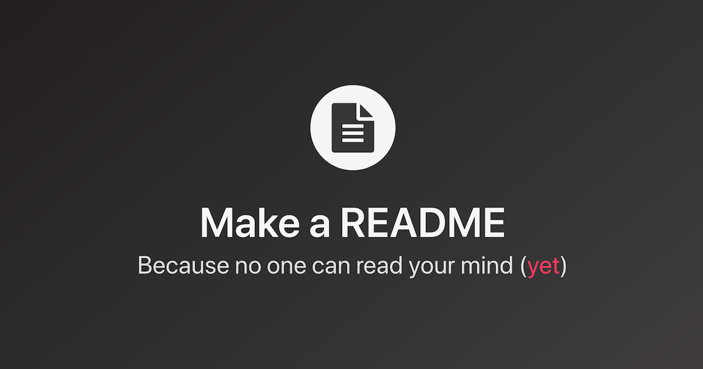

Essential Documentation & Design Tools for Developers
Master 3 essential tools every developer needs for documentation and
design before writing production code.

README file illustration for the Purpose of README file article
README.md: Preventing "What Does This Button Do?" Since 1970
Think of a README file as the front door to your project. It is a
simple text document that tells other humans what your code does, how
to install it, and why it exists. Without a README, your project is
just a mysterious pile of files; with one, it's a professional tool.
Wireframe illustration for the Purpose of Wireframe article
Wireframes: Because Changing a Drawing is Cheaper Than Changing Code
A wireframe is a two-dimensional, low-fidelity outline of your
interface. It focuses on functionality and hierarchy rather than
colors and fonts. By "gray-boxing" your ideas first, you can catch
logic flaws and user-flow issues before a single pixel is polished or
a single <div> is styled.
Read more
Git Branch illustration for the Git Branch article
Git Branches: How to Experiment Without Blowing up the App!
In Git, a branch is a lightweight, moveable pointer to a specific
commit. Think of it as a parallel dimension where you can build a new
feature or fix a bug without touching the "Main" timeline of your
project. If the experiment works, you merge it back; if it fails, you
can delete that timeline and pretend it never happened. It is the
ultimate "undo" button for collaborative development.